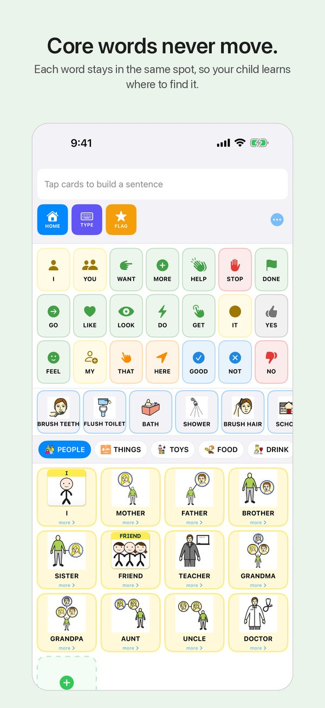

← Tom Taps
What to model at snack, bath and play
Tom Taps guide 2 for parents and caregivers. Start with Your first week with Tom Taps.
Get Tom Taps on the App Store · Free to start
Mix different kinds of words
Model words for asking, commenting, telling others what to do, and describing. Children taught only to ask for things often stop progressing early.
Snack time
- Ask: each time you refill the plate, tap I, WANT, MORE as you say it.
- Comment: when your child enjoys a bite, tap I, LIKE, THAT.
- Finish: when the snack is finished, tap DONE.
Bath time
- Describe: when the water is warm, tap FEEL, GOOD. When your child wants more water, tap MORE.
- Protest: model NO and STOP when something is unwanted, like soap in the eyes. If your child taps STOP, stop.
Play time
- Tell others what to do: when you take turns with a toy, tap YOU, GO.
- Share attention: whenever your child points or leads you somewhere, tap LOOK, HERE.
- Ask for help: when a toy gets stuck, tap HELP, then help your child with it.

Recap
- Snack: I WANT MORE · I LIKE THAT · DONE
- Bath: FEEL GOOD · MORE · NO · STOP
- Play: YOU GO · LOOK HERE · HELP
Pick one phrase for each routine and start tomorrow. Keep the rules from the first guide: go slowly, and don’t test or correct.
Next: Make a card with your own photo and voice.
Symbols from the Mulberry Symbol Set, CC BY-SA 4.0.